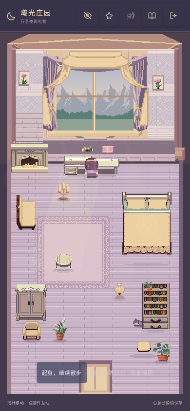
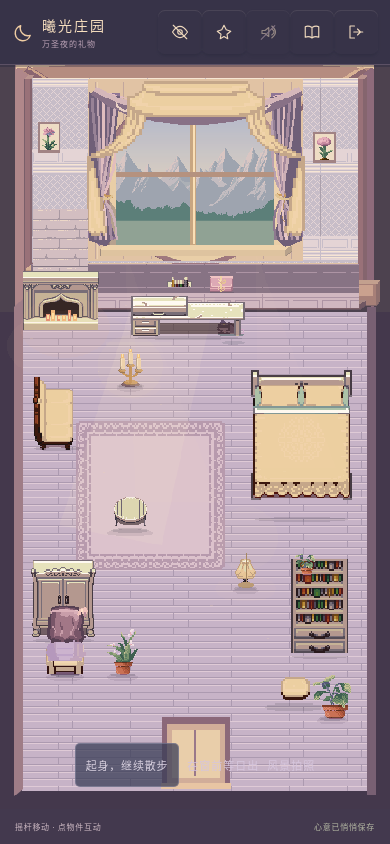

版本 reference-art-20261106-2。角色坐姿与遮挡不再跟随环境刷新切换；移除开帘素材里误带入玻璃的备用横杆。
打开新版试玩 · 真实测试记录
Chromium，390×844，同一清晨与奶油主题。

正常与低特效分别观察 90 帧，两内核均无站立贴图赋值；起身、拍照及返回通过。以下为真实 WebKit 手机视口。

当前包含完整离线资源。若已有旧缓存，请在庄园手记内检查更新，选择「保存进度并更新」。不需要删除存档或清空网站数据。